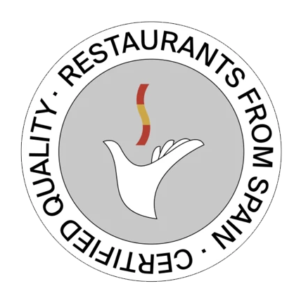
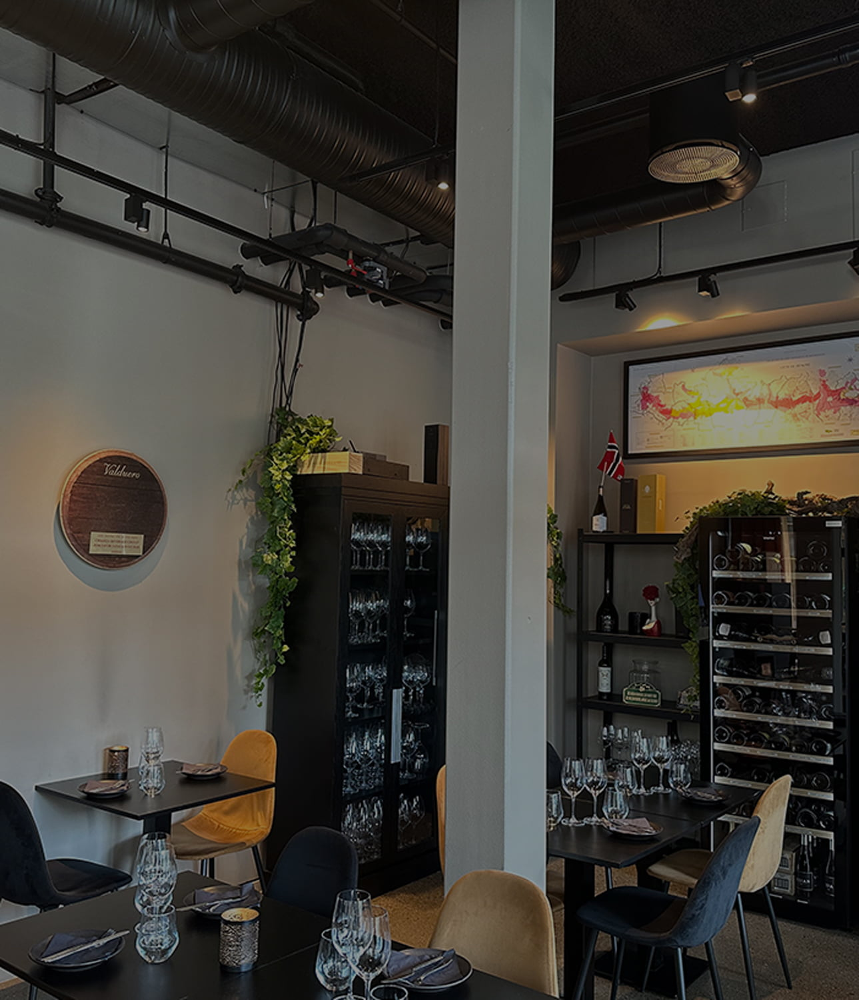
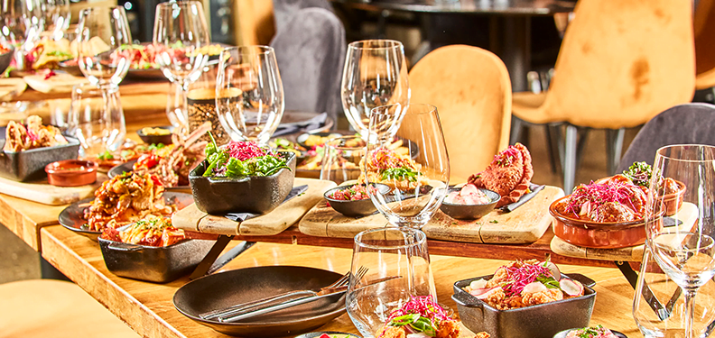
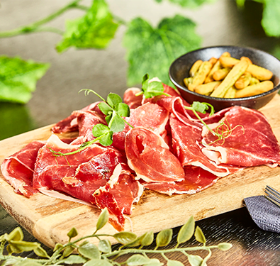
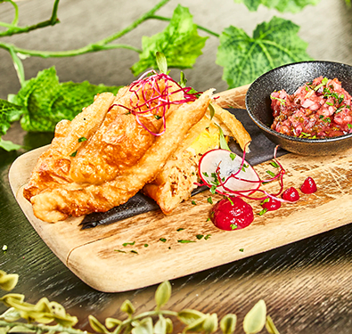
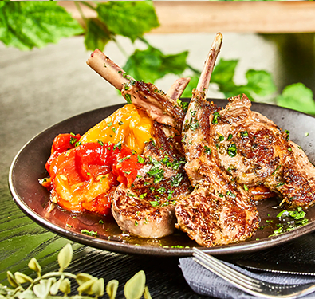
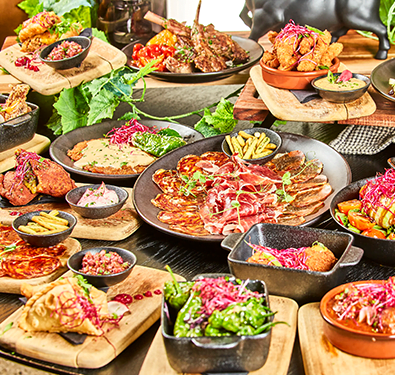
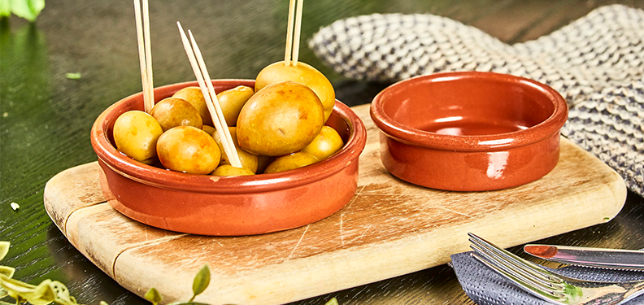
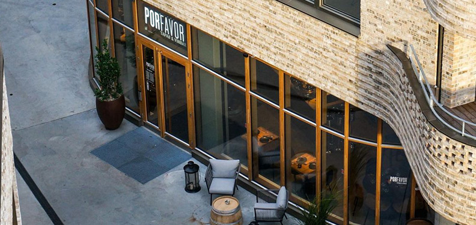

Por Favor er en hyllest til det kjente spanske kjøkkenet. Vår meny er bygget på tanker og filosofi om å tilby en gastronomisk opplevelse med en sterk spansk karakter kombinert med raffinement og innovasjon. Vi bruker tradisjonelle oppskrifter fra Spania og gir dem et internasjonalt preg.


Por Favor Vinbar er virkelig en av de stedene som minner deg på hvorfor små, uavhengige steder fortjener all støtten de kan få. Det er ikke bare maten og vinen som gjør dette til en spesiell opplevelse, men den menneskelige varmen og servicen som følger med. Maten holder seg trofast til det spanske kjøkkenet, med klassisk tapas laget med kjærlighet og respekt for råvarene.
Mannen og jeg hadde en perfekt liten bursdagsdate hos dere. Og koste oss veldig. Hos stemning, utrolig hyggelige servitører med glimt i øyet og mange smil. Entrecoten kunne vi sikkert kjøpt to til av. Den var nydelig! Anbefales 🌟
Thank you for a fantastic evening with lots of delicious tapas! We really enjoyed having a separate room for our party. Special thanks to Joseph (Jose). Your service and humor made our celebration a memorable experience!
Vell verdt turen fra Oslo for å nyte god vin og deilig mat 🧑🏻🍳
La mejor y servicio de Asker
Best Tapas and Wine Norway super price super service 🥰
“Por Favor er virkelig en perle blant restauranter! Jeg ble helt overveldet av de autentiske spanske smakene og den utrolige raffinementen i rettene. Hver bit var en reise til Spania, og jeg kunne virkelig føle kjærligheten og lidenskapen som ble lagt ned i hver tallerken. Tania Nieto og hennes team har virkelig skapt en unik gastronomisk opplevelse som er både elegant og innovativ. Jeg anbefaler på det sterkeste å prøve deres tradisjonelle retter med en internasjonal vri.”AnnaRegissør InAsker
“Por Favor er en skjult perle for enhver matelsker. Dedikasjonen og lidenskapen til kokkene på denne restauranten er tydelig i hver rett som serveres. Fra den delikate balansen av smaker i gazpacho til den smeltende gode Iberico-skinken, forteller hver bit en historie om den spanske kulinariske arven. Kombinasjonen av tradisjonelle oppskrifter og innovative vrier skaper en uforglemmelig matopplevelse som vil etterlate deg med en uimotståelig trang til mer.”BenedicteMedgrunnlegger Budstikka
“Sydlandsk stemming på et bytorg – spansk vin – fristende tapas og deilige dufter – lekkert interiør. Høres ikke dumt ut, gjør det vel? Nå kan du oppleve alt dette i Asker sentrum, på vin og tapasbaren PorFavor ved torget i det nybygde Wesselkvartalet.”HenrikJournalist HoReCa nytt







Vi inviterer deg til å bli med oss og oppleve en kulinarisk reise gjennom tradisjonelle spanske oppskrifter med en internasjonal vri. Ta del i vårt lidenskapelige ønske om å gi deg den beste matopplevelsen, og vi er sikre på at du vil forlate Por Favor med en følelse av tilfredsstillelse og glede.
Reserver ditt bord nå for å bli en del av denne kulinariske feiringen. Vi ser frem til å ønske deg velkommen og ta deg med på en uforglemmelig reise gjennom smakene av Spania.
Tel: 955 23 744
E-post: porfavor@askerporfavor.no
Apotekerhagen 5, 1383, Asker Norway
Vis på kart